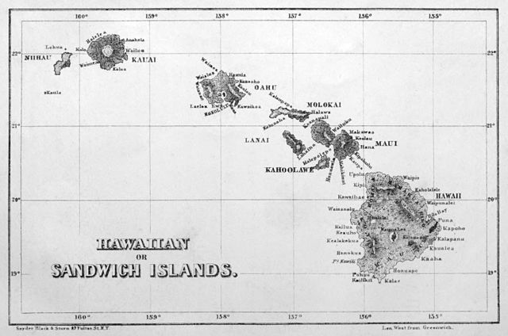
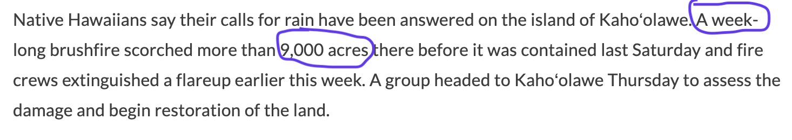

Exploration 1.1.1 discusses the formation of the Hawaiian Islands and the relation between their age and position with respect to their volcanic hot spot. We include all units in the description.
In addition, there are several atolls, and numerous smaller islets. It forms what we call an archipelago. Hawaiʻi became U.S. \(50^{th} \) state on August 21, 1959 https://www.archives.gov/legislative/features/hawaii 2 , and is the only one not geographically connected to North America.

Map of the Hawaiian ialnds in grey and white.Figure1.1.1.Map of the Hawaiian or Sandwich Islands, published in 1854 in Edward T. Perkins’ Na Motu; or, Reef-Rovings in the South Seas.
The formation of the Hawaiian Islands is occurring via Hot-Spot Volcanism. The fixed hot spot at the source of the Hawaiian Islands is located in the middle of the Pacific Plate, and the chain was formed as the plate drifted toward the northwest. Loihi, the youngest seamount of the chain is currently erupting from its summit at a depth of 1000 meters. In the following chart we have the age of some Hawaiian volcanoes along with their distance from Kilauea: https://pubs.usgs.gov/pp/1987/1350/pdf/chapters/pp1350_ch1.pdf 3
Table1.1.2.
Volcano
Age in million years
Distance in km
Kilauea
0. 2
0
Mauna Kea
0.375
54
Kohala
0.43
100
Haleakala
0.75
182
Kahoolawe
1.03
185
West Maui
1.32
221
Lānaʻi
1.28
226
East Molokaʻi
1.76
256
West Molokaʻi
1.9
280
Koolau
2.6
339
Waianae
3.7
374
Kauaʻi
5.1
519
Niʻihau
5.89
565
This relation is an example of what we call a function which means that for each Island, given as input their age in million years we have an output in the form of their distance in km to the Hot Spot. It can be observed that from Table 1.1.2 that the Island of Niihau is the oldest one from this list being 4.89 million years old and also the furthest one from the Hot Spot at 565 km. Koolau, Oʻahu Island, is estimated to be 2.6 million years old and at 339 km from the hot spot.
Exploration 1.1.2 discusses a dramatic event that occurred on the Island of Kaho’olawe in Spring 2020.
Exploration1.1.2.
In late February of 2020, Kahoʻolawe caught fire (see Figure 1.1.4 for an aerial view of the region that burned). Due to the danger of unexploded ordnances, firefighters were unable to actively fight the brush fire, which left it burning for roughly six days until a rainstorm stopped the spread. The fire burned much of the re-introduced vegetation on the island along with destroying the Kahoʻolawe Island Reserve Commission (KIRC) equipment and storage http://www.kahoolawe.hawaii.gov/newsletters/Spring_2020.pdf 4 . Figure 1.1.3 is a transcript of a news report from Hawaiʻi Public Radio on the subject.

Figure1.1.3.From a news report on Kahoʻolawe fire, Spring 2020 (source: Hawaiʻi Public Radio).
In that report units were critical to understand the time-line of the event, its magnitude, as well as the cost. Extracted from the text, we can see that the units quantifying the event are: \(1\) week; \(9,000\) acres; \(40 \) years; \(10,000\) dollars.
Figure1.1.4.Aerial View of the region that caught fire. Taken by Prof. M. Chyba on January 29, 2023.
Definition1.1.5.Unit Analysis.
is the process of working with units to help solve problems.
Example1.1.6.
Coming back to Exploration 1.1.1 and Table 1.1.2. Answer the following questions about the units
.
(a)
What is the independent variable in this function? What are the units for the independent variable?
Solution.
Age is the independent variable and Million Years is the corresponding unit.
(b)
What is the dependent variable in this function? What are the units for the dependent variable?
Solution.
Distance is the dependent variable (the distance depend on the age) and kilometers (km) is the corresponding unit.
(c)
How much older and further away from the hot spot is Kauaʻi compare to Mauna Kea?
Solution.
Kauaʻi is \(4.725\) million years older than Mauna Kea \((5.1-0.375\) million years) and is \(511\) km further away from the volcanic hot spot (\(565-54\) km.).
We finish this section with another example of units used as a descriptor of some specifics about the island of Kahoʻolawe.
Exploration1.1.3.Quantitative Information about Kahoʻolawe.
Environmental data. The yearly temperature typically varies between \(67^o\) F (\(19.4^o\) C) and \(75.7^o\) F \(24.3^o\)C) with the coolest in February and warmest in September. The largest rain precipitation is usually in January with an average of \(2.44\) inches (\(61.98\) mm) and the driest month is June with an average of \(0.67 \) inches (\(17.02\) mm) https://geoportal.hawaii.gov/ 5
Geographical data. Its position on Earth is given by latitude: \(20.33°\) N, longitude: \(156.36°\) W. The island’s dimension is \(11\) miles (\(17.7 \)km) long by \(6\) miles (\(9.7\) km) across. It has a total land area of \(44.6\) square miles (\(115.5 \) km\(^2\)), and the highest elevation is the crater of Lua Makika at \(1,483 \) feet (ft) (\(452\) meters) >https://en.wikipedia.org/wiki/Kahoolawe 6